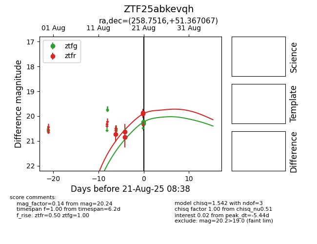

Target ZTF25abkevqh at 2025-08-21 08:38, see:
FINK: fink-portal.org/ZTF25abkevqh
Lasair: lasair-ztf.lsst.ac.uk/objects/ZTF25abkevqh
ALeRCE: alerce.online/object/ZTF25abkevqh
alt names
ZTF25abkevqh (ztf,alerce)
coordinates:
equatorial (ra, dec) = (258.7516,+51.36707)
galactic (l, b) = (78.3843,+35.67269)
photometry
last ztfg=20.24, ztfr=19.91
3 ztfg, 5 ztfr detections
